USB port and USB-serial chip
Power, uploading, and Serial communication with the computer.
Module 2 · Tangible Interactions
A change of paradigm towards physical hardware: the logic of sensors and actuators, with Arduino as the central tool for creating interactive prototypes.
Chapter 1 · Meet Arduino · 1.1
Arduino is an open-source platform made of boards with a microcontroller and the Arduino IDE to program them. It reads inputs (buttons, sensors), runs your program, and controls outputs (LEDs, motors, sound), many times per second.
Open source means the board designs and the software are public. Anyone can study, copy, or improve them, which is why there are so many compatible boards, libraries, and examples.
| Board | Notes |
|---|---|
| Uno | The classic: 5 V, robust, the most examples and shields. |
| Leonardo / Micro | Can act as a USB keyboard or mouse for the computer. |
| Mega | Many more pins, for large installations. |
| Nano | Same chip as the Uno in a small board that fits on a breadboard. |
| MKR WiFi 1010 | 3.3 V, Wi-Fi, Bluetooth, and a battery connector. |
1.2 · Meet Arduino
The Uno packs everything you need on one board: a USB connection to the computer, rows of pins for inputs and outputs, and power pins for your components.
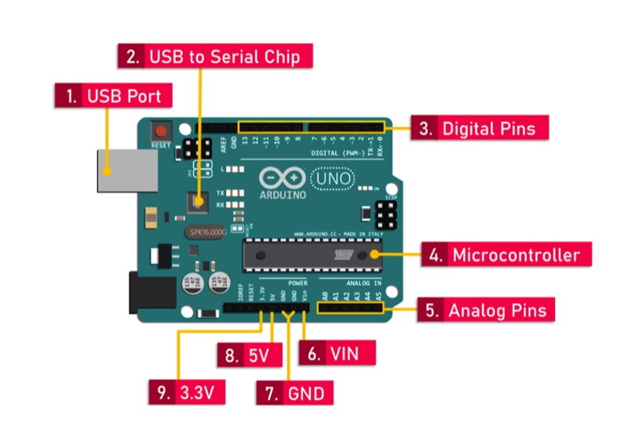
Power, uploading, and Serial communication with the computer.
Read or write HIGH/LOW. Avoid 0 and 1 (RX/TX): they are used by USB serial.
3, 5, 6, 9, 10, and 11 can output intermediate levels with
analogWrite().
The ATmega328P chip that stores and runs your sketch.
Read a voltage from 0 to 5 V as a number from 0 to 1023. They also work as digital pins.
5V and 3.3V supply your components, GND is ground, and VIN takes an external 7–12 V supply.
Each Uno pin should supply about 20 mA at most: enough for one LED, not for a motor. The MKR WiFi 1010's pins are limited to about 7 mA. Anything bigger needs a transistor or a driver.
1.3 · Meet Arduino
The school has two kinds of board. The Uno is the default for this module; the MKR WiFi 1010 is for projects that need wireless or a battery.
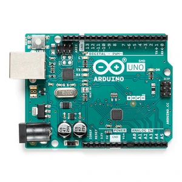
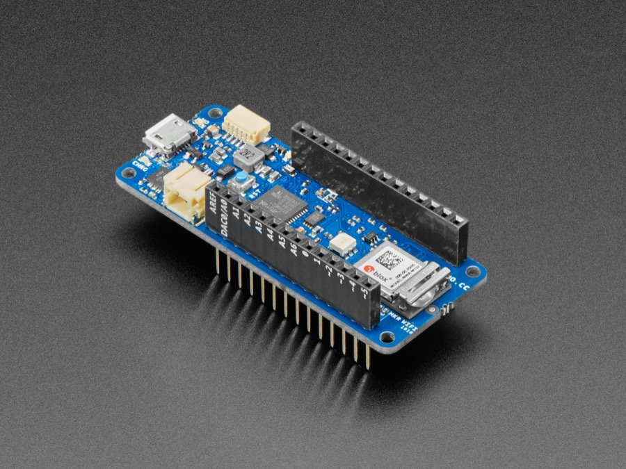
| Arduino Uno Rev3 | Arduino MKR WiFi 1010 | |
|---|---|---|
| Microcontroller | ATmega328P (8-bit) | SAMD21 Cortex-M0+ (32-bit) |
| Logic voltage | 5 V | 3.3 V (pins not 5 V tolerant) |
| Wireless | None | Wi-Fi and Bluetooth (NINA module) |
| Battery | External only | LiPo connector with on-board charging |
| Current per pin | ≈ 20 mA | ≈ 7 mA |
| Size | Larger, accepts shields | Small and light |
| Use it for | Most projects, 5 V modules, learning | Wireless, portable, and wearable objects |
VCC (3.3 V) pin, not from 5V.
WiFiNINA for Wi-Fi and
ArduinoBLE for Bluetooth Low Energy.
1.4 · Meet Arduino
| Module | On the MKR |
|---|---|
| Potentiometers, LDR, FSR dividers | Work directly if powered from 3.3 V. |
| Buttons, reed switches | Work directly with INPUT_PULLUP. |
| RC522 RFID | Already 3.3 V: work directly. |
| SG90 servo | Power from 5V; the 3.3 V signal usually works. |
| HC-SR04 ultrasonic | Needs 5 V power; its ECHO output is 5 V, so use a voltage divider (e.g. 1 kΩ + 2 kΩ) or a level shifter. |
| 5 V I2C LCD backpack | Pulls SDA/SCL up to 5 V: use a level shifter. |
| WS2812B LED strip | Powered at 5 V; the 3.3 V data signal may be unreliable. A level shifter (e.g. 74AHCT125) fixes it. |
1.5 · Meet Arduino
| Step | Action |
|---|---|
| 1 | Download Arduino IDE 2 from arduino.cc/en/software. |
| 2 | Connect the board with a USB cable that carries data (some cables only charge). |
| 3 | Tools → Board: choose Arduino Uno (or the MKR after installing its package). |
| 4 | Tools → Port: choose the port that appears when the board is connected. |
| 5 | Click Verify (✓) to compile, then Upload (→). |
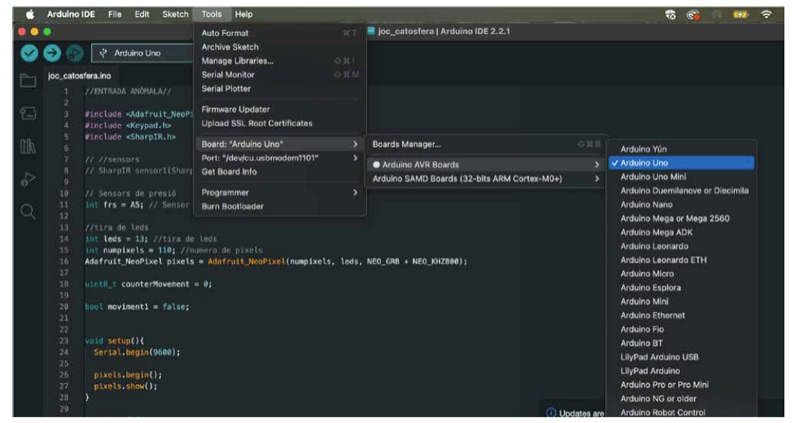
Upload fails? Check the board and port, close other programs using the port (such as a web page connected over Web Serial), and try a different USB cable.
Chapter 2 · Digital output and input · 2.1
Arduino programs are called sketches and are
written in C++. Every sketch has two functions: Arduino runs
setup() once when the board starts, then repeats
loop() forever.
// 1. Global variables: before setup()
const int ledPin = 2;
// 2. setup(): runs once, to configure pins and libraries
void setup() {
pinMode(ledPin, OUTPUT);
}
// 3. loop(): runs again and again
void loop() {
// read inputs → decide → update outputs
}let count = 0;
const speed = 1.5;
let isOpen = false;
function twice(n) {
return n * 2;
}int count = 0;
const float speed = 1.5;
bool isOpen = false;
int twice(int n) {
return n * 2;
}
Coming from the
JavaScript guide? The ideas
are the same, but every value has a
type (int, float,
bool, char, unsigned long),
and every statement ends with ;.
2.2 · Digital output and input
pinMode(pin, mode)
In setup(), declare each pin as
OUTPUT, INPUT, or
INPUT_PULLUP.
digitalWrite(pin, value)
Sets an output to HIGH (5 V) or
LOW (0 V).
digitalRead(pin)Returns HIGH or LOW.
INPUT
The pin floats unless you add an external
pull-down
resistor. With a pull-down, pressed = HIGH.
INPUT_PULLUP
Turns on an internal pull-up resistor: no external resistor
needed. Wire the button to GND; pressed = LOW.
2.3 · Digital output and input
const int ledPin = 2;
void setup() {
pinMode(ledPin, OUTPUT);
}
void loop() {
digitalWrite(ledPin, HIGH); // on
delay(500); // wait half a second
digitalWrite(ledPin, LOW); // off
delay(500);
}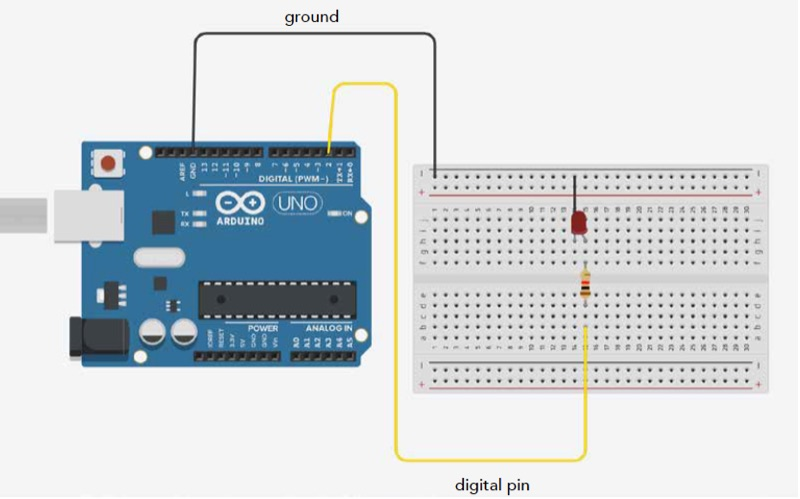
delay(ms) pauses the whole program: while it waits,
Arduino cannot read buttons or sensors. Fine for a first sketch;
for interaction, see timing with millis().
2.4 · Digital output and input
//------------------------ BASIC BUTTON ------------------------
const int led = 12; // LED pin
const int button = 2; // button pin
bool buttonValue = false; // true if pressed, false if not
void setup() {
pinMode(led, OUTPUT); // LED as a digital output
pinMode(button, INPUT); // button as a digital input (external pull-down)
}
void loop() {
buttonValue = digitalRead(button); // read the button
if (buttonValue == true) { // if the button is pressed
digitalWrite(led, HIGH); // turn on the LED
} else { // when the condition is false
digitalWrite(led, LOW); // turn off the LED
}
}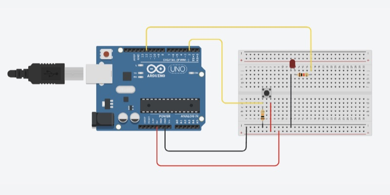
pinMode(button, INPUT_PULLUP);
// pressed → LOW, released → HIGH
if (digitalRead(button) == LOW) {
digitalWrite(led, HIGH);
}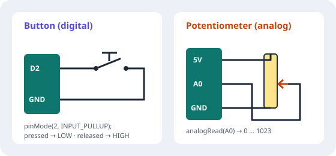
2.5 · Digital output and input
Serial sends text from the board to the computer
through the USB cable. It is the easiest way to see what your
sketch is doing. Open it with
Tools → Serial Monitor and select the same speed
(baud rate) used in Serial.begin().
const int redLedPin = 12;
const int pushbuttonPin = 2;
void setup() {
pinMode(redLedPin, OUTPUT);
Serial.begin(9600); // start Serial at 9600 baud
}
void loop() {
bool buttonValue = digitalRead(pushbuttonPin);
Serial.println(buttonValue); // prints 1 or 0
}Serial.print() stays on the same line;
Serial.println() ends the line.
Serial.print("button: ");
label:value pairs separated by commas to see live
graphs, e.g. light:512,threshold:400.
Serial also works in the other direction. Type in the Serial Monitor's input field and press Enter:
void loop() {
if (Serial.available() > 0) {
char command = Serial.read();
if (command == '1') digitalWrite(redLedPin, HIGH);
if (command == '0') digitalWrite(redLedPin, LOW);
// other characters (such as the line ending) are ignored
}
}Chapter 3 · Analog input and PWM · 3.1
An analog signal can take any value in a range, like the light in a room. A digital signal only has two states, like a button. Arduino reads and writes both, each with its own functions and range.
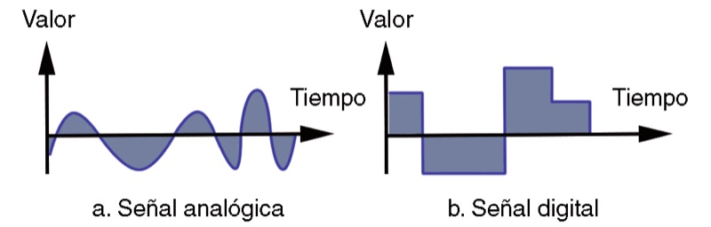
| Function | Range | Pins on the Uno |
|---|---|---|
digitalRead() / digitalWrite()
|
0 or 1 (LOW / HIGH) | Any digital or analog pin |
analogRead() — analog input
|
0–1023 (10 bits) | A0–A5 |
analogWrite() — PWM output
|
0–255 (8 bits) | ~3, 5, 6, 9, 10, 11 |
Analog readings go from 0 to 1023. The 0–255 range
belongs to PWM output. Mixing them up is one of the most
common bugs—use map()
to convert.
3.2 · Analog input and PWM
void setup() {
Serial.begin(9600);
}
void loop() {
int value = analogRead(A0); // 0–1023
Serial.println(value);
delay(50);
}If the value goes “the wrong way” when you turn the knob, swap the two outer legs.
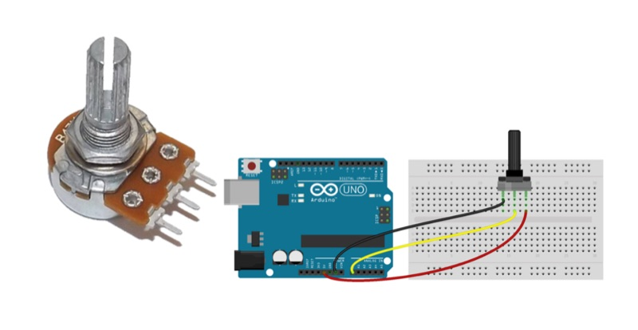
3.3 · Analog input and PWM
Arduino cannot output real intermediate voltages. Instead, PWM (pulse-width modulation) switches the pin on and off very fast. The percentage of time it is on—the duty cycle—decides how bright an LED looks or how fast a motor turns.
const int ledPin = 9; // must be a ~PWM pin
void setup() {
pinMode(ledPin, OUTPUT);
}
void loop() {
for (int b = 0; b <= 255; b++) { // fade in
analogWrite(ledPin, b);
delay(5);
}
for (int b = 255; b >= 0; b--) { // fade out
analogWrite(ledPin, b);
delay(5);
}
}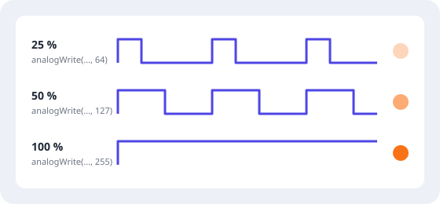
3.4 · Analog input and PWM
map(value, fromLow, fromHigh, toLow, toHigh)
rescales a number from one range to another. This sketch maps a
10-bit reading to 8 bits and uses it to dim an LED on pin 9:
/* Map an analog value to 8 bits (0 to 255) */
void setup() {
Serial.begin(9600);
}
void loop() {
int val = analogRead(A0);
Serial.print("Input value: ");
Serial.print(val);
val = map(val, 0, 1023, 0, 255); // mapping function
Serial.print(", Output value: ");
Serial.println(val);
analogWrite(9, val); // PWM output
delay(200);
}
map() does not limit its result: a reading outside
the input range produces a value outside the output range.
constrain(value, min, max) clamps it.
// measured: 180 in darkness, 760 with a torch
int light = analogRead(A0);
int level = map(light, 180, 760, 0, 100);
level = constrain(level, 0, 100);
// invert a range by swapping the output limits
int angle = map(light, 180, 760, 180, 0);Chapter 4 · Interaction logic · 4.1
Variables store values; conditionals choose what to do. Combine
conditions with && (and),
|| (or), and ! (not).
int light = analogRead(A0);
bool isDark = light < 300;
bool isPressed = digitalRead(2) == LOW;
if (isDark && isPressed) {
// dark AND pressed
} else if (isDark || isPressed) {
// only one of them
} else {
// neither
}| Operator | Meaning |
|---|---|
== / != |
equal / not equal (= alone assigns a value)
|
< > <=
>=
|
less / greater (or equal) |
&& || !
|
and / or / not |
Give conditions meaningful names:
isDark && isPressed is far easier to read and
debug than a long expression full of numbers.
4.2 · Interaction logic
An array stores several values of the same type under one name. Each value has an index, starting at 0.
// declaring a collection (array) of 10 integers
int myArray[10] = {3, 2, 6, 1, 9, 7, 0, 2, 2, 1};
void setup() {
Serial.begin(9600);
}
void loop() {
for (int i = 0; i < 10; i++) {
Serial.print("Index: ");
Serial.print(i);
Serial.print(" | Value: ");
Serial.println(myArray[i]);
}
}
Arrays are perfect for groups of LEDs or buttons: configure and
control them all with one for loop.
const int ledPins[] = {2, 3, 4, 5, 6}; // 4 green LEDs and 1 red
const int buttonPin = 7;
void setup() {
// configure the LED pins as outputs
for (int i = 0; i < 5; i++) {
pinMode(ledPins[i], OUTPUT);
}
// button as input (with an external pull-down resistor)
pinMode(buttonPin, INPUT);
}
The last valid index of a 5-element array is 4.
Reading ledPins[5] does not give an error—it reads
random memory. Check your loop limits.
4.3 · Interaction logic
A function gives a name to a block of code so you can reuse it.
Its type says what it gives back: void means nothing.
void: just do somethingvoid startGame() {
Serial.println("Game starting in 3...");
// a quick light show to alert the player
for (int i = 0; i < 3; i++) {
digitalWrite(2, HIGH);
delay(200);
digitalWrite(2, LOW);
delay(800);
}
Serial.println("GO!");
}// 1. DEFINE with two parameters
void flashLED(int pin, int duration) {
digitalWrite(pin, HIGH);
delay(duration);
digitalWrite(pin, LOW);
delay(50); // short gap between flashes
}
void loop() {
// 2. CALL with specific values
flashLED(2, 500); // pin 2 for 500 ms
flashLED(3, 100); // pin 3 for 100 ms
}const int buttonPins[] = {8, 9, 10, 11};
// 'int' instead of 'void' because it returns a number
int checkButton() {
while (true) { // wait until something happens
for (int i = 0; i < 4; i++) {
if (digitalRead(buttonPins[i]) == HIGH) {
delay(50); // simple debounce
return i; // exit and give back the index
}
}
}
}
void loop() {
Serial.println("Waiting for player...");
int pressed = checkButton(); // catch the returned value
Serial.print("The player pressed button: ");
Serial.println(pressed);
}4.4 · Interaction logic
loop() runs thousands of times per second, so a
single press is read as “pressed” many times. To count presses or
toggle something, detect the edge: the moment the
button changes from released to pressed.
const int buttonPin = 2; // with INPUT_PULLUP: pressed = LOW
const int ledPin = 12;
bool ledOn = false;
int lastButton = HIGH;
int counter = 0;
void setup() {
pinMode(buttonPin, INPUT_PULLUP);
pinMode(ledPin, OUTPUT);
Serial.begin(9600);
}
void loop() {
int button = digitalRead(buttonPin);
if (button == LOW && lastButton == HIGH) { // edge: just pressed
counter++;
ledOn = !ledOn; // toggle
digitalWrite(ledPin, ledOn ? HIGH : LOW);
Serial.println(counter);
delay(50); // ignore contact bounce
}
lastButton = button;
}
Bounce: a button's metal contacts vibrate for a
few milliseconds when pressed, producing several fast edges. A
short delay after the edge is the simplest fix. To debounce
without blocking, ignore new edges for 50 ms using
millis().
4.5 · Interaction logic
Interactive objects have states: waiting, active,
celebrating. Store the current state in a variable, change it when
an event happens, and use switch to decide what to do
in each state. This is a simple state machine.
int currentMode = 0; // 0 = off, 1 = on, 2 = rainbow
void loop() {
// an edge on the button moves to the next mode
// (see 4.4) → currentMode++; if (currentMode > 2) currentMode = 0;
switch (currentMode) {
case 0: modeOff(); break;
case 1: modeOn(); break;
case 2: modeRainbow(); break;
}
}This pattern comes from the course's FastLED “mode button” exercise: each button press moves to the next animation.
4.6 · Interaction logic
While delay() waits, nothing else happens.
millis() returns the milliseconds since the board
started; compare it with the last time something happened to act
at intervals while the rest of loop() keeps reading
sensors.
unsigned long previousTime = 0;
const unsigned long interval = 500;
bool ledOn = false;
void loop() {
unsigned long now = millis();
if (now - previousTime >= interval) {
previousTime = now;
ledOn = !ledOn;
digitalWrite(12, ledOn ? HIGH : LOW);
}
// the rest of loop() keeps running: read buttons and sensors here
}
Use unsigned long for time values. An
int overflows after about 32 seconds.
Chapter 5 · Working with libraries · 5.1
A library is code someone else wrote to control a specific
component or task. Instead of generating the exact pulses a servo
needs, you write servo.write(90). Libraries save time
and hide complexity, so you can focus on the interaction.
Tools → Manage Libraries… Search by name, check the author, and click Install. The usual way.
Sketch → Include Library → Add .ZIP Library… for libraries downloaded from GitHub or a manufacturer.
Servo, Wire, SPI, and
SoftwareSerial come with the IDE.
#include <Servo.h> // 1. include the library
Servo myServo; // 2. create an object
void setup() {
myServo.attach(9); // 3. call its methods with object.method()
}
void loop() {
myServo.write(90);
}The fastest way to learn a library is through its examples: File → Examples, then scroll to the library's name. Open one, upload it unchanged, then modify it. Its documentation (usually on GitHub) lists every method.
| Error | Likely cause and fix |
|---|---|
No such file or directory |
The library is not installed, or the name in
#include is misspelt. Install it or check the
capitals.
|
'X' was not declared in this scope |
Missing #include, or the example was written
for a different library or version.
|
Multiple libraries were found |
Two libraries share a file name. Read which one was used and remove the one you do not need. |
| Compiles but does nothing | Wrong pin, wrong I2C address, or wrong board selected. |
Different libraries for the same component often have different
method names (for example, LCD libraries use
lcd.init() or lcd.begin()). Follow the
examples of the library you actually installed.
5.2 · Working with libraries
| Library | For | Chapter |
|---|---|---|
| FastLED | Addressable LED strips | 8 |
| Servo | Servomotors (built-in) | 9 |
| LiquidCrystal_I2C | Character LCDs with I2C backpack | 10 |
| DHT sensor library | DHT11 / DHT22 | 6 |
| MX1508 | MX1508 motor driver | 9 |
| NewPing | HC-SR04 ultrasonic sensor | 6 |
| DFRobotDFPlayerMini | MP3 player module | 11 |
| SoftwareSerial | Extra serial port (built-in) | 11 |
| SPI + MFRC522 | RFID reader | 7 |
Chapter 6 · Sensing the environment · 6.1
An LDR (light-dependent resistor or photoresistor) has a resistance that falls as light increases. Arduino reads voltage, not resistance, so the LDR goes in a voltage divider with a fixed resistor. Use a 100 kΩ resistor for a wide range in normal rooms; try 10 kΩ in very bright spaces.
const int ldrPin = A0;
const int ledPin = 4;
void setup() {
pinMode(ledPin, OUTPUT);
Serial.begin(9600);
}
void loop() {
int ldrValue = analogRead(ldrPin);
Serial.println(ldrValue);
delay(100);
}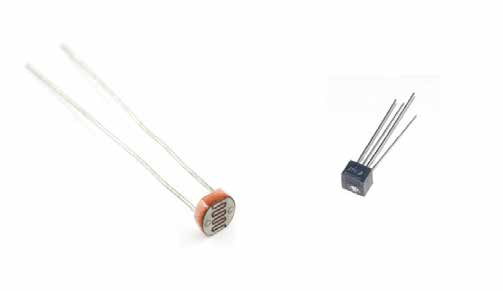
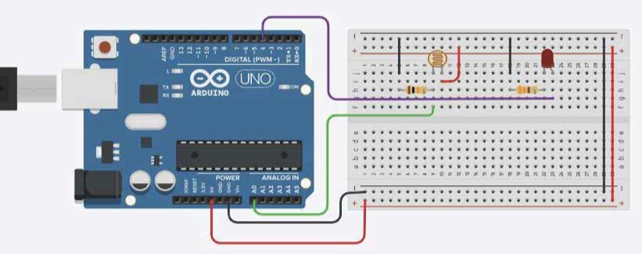
With a single threshold, the LED flickers when the light is near the limit. Two thresholds—a gap called hysteresis—keep it stable.
const int darkLevel = 300; // below this: switch on
const int lightLevel = 400; // above this: switch off
void loop() {
int light = analogRead(ldrPin);
if (light < darkLevel) {
digitalWrite(ledPin, HIGH);
} else if (light > lightLevel) {
digitalWrite(ledPin, LOW);
}
delay(100);
}6.2 · Sensing the environment
Emits infrared light and measures the reflection angle. Gives an analog voltage that rises as objects get closer, within its range (e.g. 10–80 cm for the GP2Y0A21). Wires: red 5V, black GND, yellow signal → A0.
This course sketch (CarSensor) works like a car's parking sensor: the closer the object, the faster a buzzer on pin 9 beeps.
int sensorPin = A0; // analog pin
int buzzerPin = 9;
void setup() {
pinMode(buzzerPin, OUTPUT);
Serial.begin(9600); // for debugging
}
void loop() {
int sensorValue = analogRead(sensorPin);
int delayTime = 500;
if (sensorValue > 700) {
delayTime = 50;
} else if (sensorValue > 500) {
delayTime = 150;
} else if (sensorValue > 300) {
delayTime = 300;
}
Serial.println(sensorValue);
// beep faster as the object gets closer
digitalWrite(buzzerPin, HIGH);
delay(delayTime);
digitalWrite(buzzerPin, LOW);
delay(delayTime);
}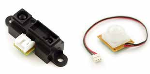
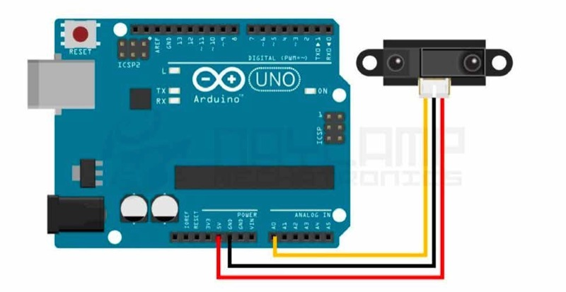
The HC-SR04 sends a 40 kHz sound pulse from TRIG and measures how long the echo takes to return on ECHO. The distance comes from that time and the speed of sound.
The NewPing library (by Tim Eckel) does the timing and the maths for you, and ignores readings beyond a maximum distance you choose. Install it from the Library Manager.
#include <NewPing.h>
const int trigPin = 9;
const int echoPin = 10;
const int maxDistance = 200; // cm: ignore anything farther
NewPing sonar(trigPin, echoPin, maxDistance);
void setup() {
Serial.begin(9600);
}
void loop() {
int distance = sonar.ping_cm(); // 0 = nothing in range
if (distance > 0) {
Serial.print("Distance: ");
Serial.print(distance);
Serial.println(" cm");
}
delay(50); // at least ~30 ms between pings
}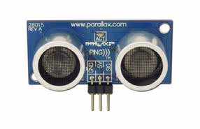
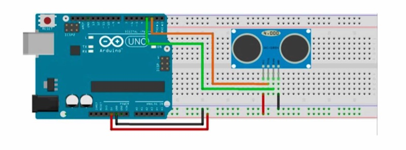
trigPin and
echoPin to match your wiring.
Soft materials and angled surfaces absorb or deflect the sound.
For steadier values, use sonar.ping_median(5), which
takes five pings and returns the median time in microseconds;
convert it with sonar.convert_cm().
6.3 · Sensing the environment
DHT sensors send temperature and humidity as digital data on one pin. The DHT22 is more precise; the DHT11 is cheaper. Both are slow: read the DHT11 at most once per second and the DHT22 once every two seconds. Install the DHT sensor library (Adafruit).
Both modules have three pins: S (signal) to a digital pin, + to 5V, and − to GND. The pin order differs between boards, so read the labels.
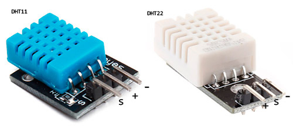
#include <DHT.h>
DHT dht(2, DHT22); // data pin 2; use DHT11 for the DHT11
void setup() {
Serial.begin(9600);
dht.begin();
}
void loop() {
delay(2000);
float humidity = dht.readHumidity();
float tempC = dht.readTemperature();
if (isnan(humidity) || isnan(tempC)) {
Serial.println("Failed to read the DHT sensor");
return;
}
Serial.print(tempC);
Serial.print(" C, ");
Serial.print(humidity);
Serial.println(" %");
}Bare sensors (four pins) need a 10 kΩ pull-up from data to VCC; most three-pin modules already include it.
6.4 · Sensing the environment
A force-sensitive resistor has a very high resistance when untouched, which drops as it is pressed. Put it in a voltage divider with a 10 kΩ resistor: 5V → FSR → A0 → 10 kΩ → GND. Use it to detect touch, a squeeze, or someone sitting down.
void loop() {
int force = analogRead(A0); // 0 untouched … ~900+ hard press
if (force < 10) {
Serial.println("No touch");
} else if (force < 300) {
Serial.println("Light touch");
} else if (force < 700) {
Serial.println("Squeeze");
} else {
Serial.println("Strong press");
}
delay(100);
}int brightness = map(force, 0, 1023, 0, 255);
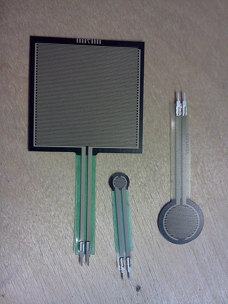
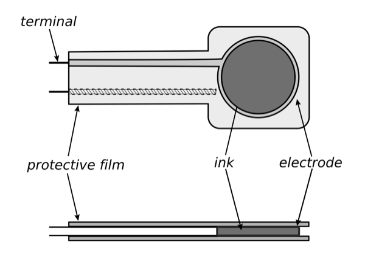
6.5 · Sensing the environment
A piezo element generates a small voltage when it is hit or bent. Connect it between A0 and GND, with a 1 MΩ resistor in parallel to discharge it between knocks. Glue it inside a box or under a table to make the whole surface sensitive.
const int threshold = 100;
const unsigned long ignoreTime = 150; // ms after a hit
unsigned long lastKnock = 0;
void loop() {
int value = analogRead(A0);
if (value > threshold && millis() - lastKnock > ignoreTime) {
lastKnock = millis();
Serial.println("Knock!");
}
}digitalRead().
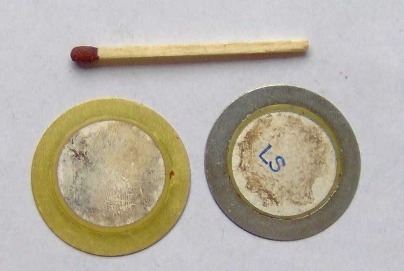
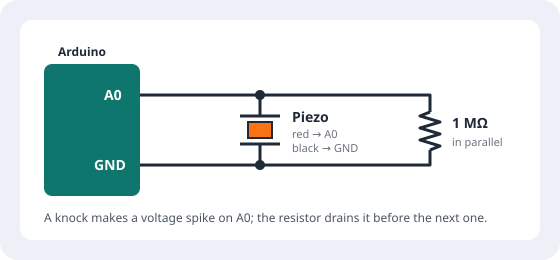
6.6 · Sensing the environment
Real sensors jitter. The values in the classroom are not the values in the exhibition space. Always measure first with the Serial Monitor, then smooth and calibrate.
int readAverage(int pin) {
long total = 0;
for (int i = 0; i < 10; i++) {
total += analogRead(pin);
delay(2);
}
return total / 10;
}Turn a noisy value into a clear decision with a threshold, and use two thresholds (on above X, off below Y) so the state does not flicker. See the night light example.
Chapter 7 · Identifying objects: RFID · 7.1
RFID (radio-frequency identification) lets a reader identify a tag without contact. The reader's antenna creates a radio field; a passive tag has no battery—it takes energy from that field and answers with its unique ID (UID).
In this module we use 13.56 MHz (HF) tags: MIFARE and NFC tags, which can also store data. They are read by the RC522 and PN532 readers, and by phones (NFC).
Tags come as cards, key fobs, and stickers. The RC522 reads them at about 2–5 cm: close enough that placing an object is a deliberate action.
The RC522 is a 3.3 V module. Power it from the 3.3V pin, never from 5V.
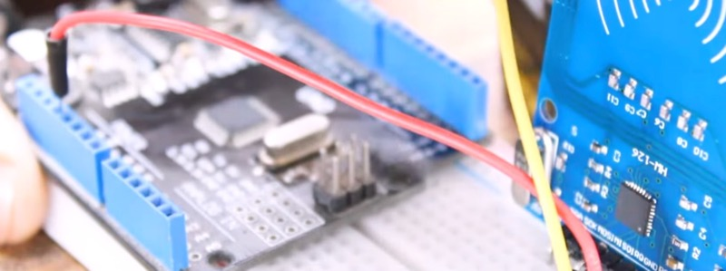
| RC522 pin | Arduino Uno | MKR WiFi 1010 |
|---|---|---|
| SDA (SS) | 10 | any digital pin, e.g. 7 |
| SCK | 13 | 9 |
| MOSI | 11 | 8 |
| MISO | 12 | 10 |
| IRQ | not connected | not connected |
| GND | GND | GND |
| RST | 9 | any digital pin, e.g. 6 |
| 3.3V | 3.3V | VCC |
Install the MFRC522 library (by miguelbalboa). The newer MFRC522v2 has a slightly different API; the examples here use the classic one.
#include <SPI.h>
#include <MFRC522.h>
#define SS_PIN 10
#define RST_PIN 9
MFRC522 rfid(SS_PIN, RST_PIN);
void setup() {
Serial.begin(9600);
SPI.begin();
rfid.PCD_Init(); // start the reader
Serial.println("Place a tag on the reader");
}
void loop() {
if (!rfid.PICC_IsNewCardPresent()) return; // no new tag
if (!rfid.PICC_ReadCardSerial()) return; // could not read it
Serial.print("UID:");
for (byte i = 0; i < rfid.uid.size; i++) {
Serial.print(rfid.uid.uidByte[i] < 0x10 ? " 0" : " ");
Serial.print(rfid.uid.uidByte[i], HEX);
}
Serial.println();
rfid.PICC_HaltA(); // stop reading this tag
rfid.PCD_StopCrypto1();
}7.2 · RFID
Read each of your tags once and copy its UID from the Serial Monitor. Store the known UIDs in an array, then compare each new reading against them to decide what to do.
// UIDs copied from the Serial Monitor (4-byte tags)
byte knownTags[][4] = {
{0x04, 0xA2, 0x3B, 0x1C}, // tag 0: the key
{0x7E, 0x11, 0x90, 0xD5}, // tag 1: the map
};
const int numTags = 2;
int findTag() {
for (int i = 0; i < numTags; i++) {
if (memcmp(rfid.uid.uidByte, knownTags[i], 4) == 0) {
return i; // found: return its index
}
}
return -1; // unknown tag
}
// in loop(), after PICC_ReadCardSerial():
int tag = findTag();
switch (tag) {
case 0: /* play a sound, change a colour… */ break;
case 1: /* move a servo… */ break;
default: Serial.println("Unknown tag"); break;
}Detecting when a tag is removed needs extra work, because the reader reports new tags, not continuous presence. A common approach: do not halt the tag, try to read it again every few hundred milliseconds, and treat it as removed when two reads in a row fail.
7.3 · RFID
Besides the UID, MIFARE Classic 1K tags store 1 KB of data in
16 sectors of 4 blocks of 16
bytes. Each sector is protected by keys (by default
FF FF FF FF FF FF), so you must authenticate before
reading or writing.
PCD_Authenticate(), MIFARE_Read(), and
MIFARE_Write().
For most interactions the UID is enough. Store data on a tag only when the object must carry information between different readers.
7.4 · RFID
Each tagged object means something: placing it on the reader is the command.
Visitors tap a card to collect content or unlock a story.
Each figure placed on a stage plays its own sound or scene.
A board knows which piece is where and reacts.
Hide tags inside objects—under felt, inside wood or 3D-printed parts—but not near metal, which blocks the field. Test the read distance through the final material.
Chapter 8 · LED strips with FastLED · 8.1
In an addressable strip, every LED has a tiny chip. The Arduino sends a “data train” of colours through one wire: the first LED keeps the first colour and passes the rest on, the second keeps the next, and so on. So each LED can show its own colour.
The strip has a direction: data enters at DIN and leaves at DOUT. Follow the arrows printed on it.
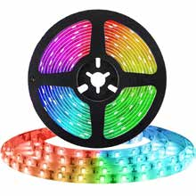
Strip 5V ── 5 V supply + (USB for a few LEDs; external supply for more)
Strip GND ── supply − AND Arduino GND (shared ground)
Strip DIN ── 330 Ω resistor ── Arduino data pin
1000 µF capacitor across 5V and GND, near the strip (stripe to GND)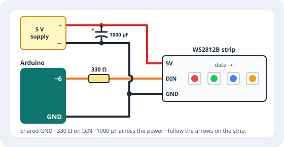
Each LED can draw up to ~60 mA at full white. 30 LEDs → 1.8 A. 60 LEDs → 3.6 A.
USB gives about 500 mA. Keep strips on USB short and dim; use a 5 V external supply for anything bigger.
FastLED.setMaxPowerInVoltsAndMilliamps(5, 500);
automatically dims the strip so it never draws more than 500
mA.
8.2 · LED strips with FastLED
Install FastLED from the Library Manager.
#include <FastLED.h>
#define LED_PIN 6 // pin connected to DIN
#define NUM_LEDS 30 // how many LEDs are in your strip
#define BRIGHTNESS 64 // 0 to 255
#define LED_TYPE WS2812B // change based on your hardware
#define COLOR_ORDER GRB
CRGB leds[NUM_LEDS]; // this array holds the colour of each LED
void setup() {
FastLED.addLeds<LED_TYPE, LED_PIN, COLOR_ORDER>(leds, NUM_LEDS);
FastLED.setBrightness(BRIGHTNESS);
FastLED.setMaxPowerInVoltsAndMilliamps(5, 500);
}
void loop() {
leds[0] = CRGB::Red; // change the array…
FastLED.show(); // …then send it to the strip
delay(500);
FastLED.clear(); // all LEDs black (in the array)
FastLED.show();
delay(500);
}
Nothing changes on the strip until you call
FastLED.show(). If the colours look swapped (red
shows green), change COLOR_ORDER.
8.3 · LED strips with FastLED
leds[0] = CRGB(255, 80, 0); // red, green, blue: 0–255
leds[1] = CRGB::Purple; // named colours
leds[2] = CHSV(160, 255, 255); // hue, saturation, valueMixes red, green, and blue light. Good for exact colours, but awkward to animate.
Hue picks the colour on a wheel, saturation how intense, value how bright. Increase hue to travel through the rainbow—ideal for animation and sensor mappings.
| FastLED hue | 0 | 32 | 64 | 96 | 128 | 160 | 192 | 224 |
|---|---|---|---|---|---|---|---|---|
| Colour | red | orange | yellow | green | aqua | blue | purple | pink |
FastLED's hue wheel goes from 0 to 255 (not 0–360°) and wraps back to red.
8.4 · LED strips with FastLED
// rainbow by hand: each LED a different hue
for (int i = 0; i < NUM_LEDS; i++) {
leds[i] = CHSV(i * (255 / NUM_LEDS), 255, 255);
}
FastLED.show();
// the same with built-in helpers
fill_solid(leds, NUM_LEDS, CRGB::Blue);
fill_rainbow(leds, NUM_LEDS, 0, 7); // start hue, hue step per LED
fill_gradient_RGB(leds, NUM_LEDS, CRGB::Blue, CRGB::Purple);
A palette is a set of 16 colours FastLED blends between. Built-in
palettes include RainbowColors_p,
LavaColors_p, OceanColors_p,
PartyColors_p, ForestColors_p, and
HeatColors_p.
CRGBPalette16 currentPalette = OceanColors_p;
CRGBPalette16 targetPalette = LavaColors_p;
uint8_t startIndex = 0;
void loop() {
for (int i = 0; i < NUM_LEDS; i++) {
leds[i] = ColorFromPalette(currentPalette, startIndex + i * 8, 255, LINEARBLEND);
}
startIndex++; // move along the palette
nblendPaletteTowardPalette(currentPalette, targetPalette, 24); // blend slowly
FastLED.show();
delay(20);
}8.5 · LED strips with FastLED
fadeToBlackBy(leds, n, amount)Dims every LED a little: leaves trails behind moving dots.
blur1d(leds, n, amount)Spreads each LED's colour into its neighbours.
leds[i].nscale8(192)Scales one LED's brightness (192/256 = 75%).
random8(), random16(n)Fast random numbers for twinkles and sparks.
beatsin8(bpm, low, high)A value that waves smoothly between low and high at a tempo.
beat8(bpm)A sawtooth ramp from 0 to 255 at a tempo.
EVERY_N_MILLISECONDS(ms) { }Runs a block at an interval without blocking.
inoise8(x, t)Smooth “Perlin” noise for organic, natural-looking motion.
uint8_t hue = 0;
void loop() {
EVERY_N_MILLISECONDS(20) { hue++; } // slowly change colour
// organic motion with noise: each LED's brightness drifts
for (int i = 0; i < NUM_LEDS; i++) {
uint8_t level = inoise8(i * 40, millis() / 4);
leds[i] = CHSV(hue, 255, level);
}
FastLED.show();
}8.6 · LED strips with FastLED
void loop() {
fadeToBlackBy(leds, NUM_LEDS, 40);
int pos = beatsin8(30, 0, NUM_LEDS - 1);
leds[pos] = CRGB::Red;
FastLED.show();
}void loop() {
uint8_t level = beatsin8(12, 20, 255);
fill_solid(leds, NUM_LEDS, CHSV(160, 255, level));
FastLED.show();
}void loop() {
fadeToBlackBy(leds, NUM_LEDS, 10);
if (random8() < 40) {
leds[random16(NUM_LEDS)] = CHSV(random8(), 200, 255);
}
FastLED.show();
delay(20);
}void colourWipe(CRGB colour) {
for (int i = 0; i < NUM_LEDS; i++) {
leds[i] = colour;
FastLED.show();
delay(30);
}
}The scanner (one LED travelling up and down) is the course's first FastLED exercise. For fire, open File → Examples → FastLED → Fire2012.
8.7 · LED strips with FastLED
addLeds once
per strip, each with its own pin and array.
CRGB ringLeds[12];
CRGB stripLeds[30];
void setup() {
FastLED.addLeds<WS2812B, 5, GRB>(ringLeds, 12);
FastLED.addLeds<WS2812B, 6, GRB>(stripLeds, 30);
}LED matrices are a strip folded into rows. In a serpentine layout, every other row runs backwards, so convert (x, y) coordinates to the LED index:
const uint8_t WIDTH = 8;
const uint8_t HEIGHT = 8;
uint16_t XY(uint8_t x, uint8_t y) {
if (y % 2 == 1) {
return y * WIDTH + (WIDTH - 1 - x); // odd rows run backwards
}
return y * WIDTH + x;
}
leds[XY(3, 5)] = CRGB::Green;8.8 · LED strips with FastLED
The interaction lives in the mapping between a sensor and the light. Pick what the sensor controls:
A knob that chooses the colour (course exercise 2).
Light that grows with pressure or closeness.
A dot that follows your hand along the strip.
An animation that accelerates with sound or movement.
// course exercise 2: interactive colour selector
int potValue = analogRead(A0); // 0–1023
int hue = map(potValue, 0, 1023, 0, 255); // to the hue wheel
fill_solid(leds, NUM_LEDS, CHSV(hue, 255, 255));
FastLED.show();Chapter 9 · Movement: motors · 9.1
| Servo | DC motor | |
|---|---|---|
| Control | Goes to an angle | Spins; speed by PWM |
| Range | 0–180° (or continuous) | Continuous |
| Speed | Medium | Fast |
| Precision | Good | Low |
| Torque | Small–medium | Depends on gearing |
| Needs | Signal pin + 5 V | Transistor or H-bridge |
| Think | Needle, flap, lock | Fan, wheel, spinning disc |
9.2 · Movement: motors
A servo moves to the angle you ask for and holds it. Three wires:
One SG90 can run from the Arduino's 5V for tests. Several servos, or larger ones, need an external supply.
#include <Servo.h>
Servo myServo; // create a servo object
void setup() {
myServo.attach(9); // signal wire to pin 9
}
void loop() {
myServo.write(0); // move to 0 degrees
delay(1000);
myServo.write(90); // move to 90 degrees
delay(1000);
myServo.write(180); // move to 180 degrees
delay(1000);
}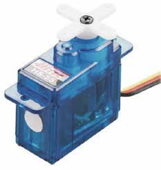
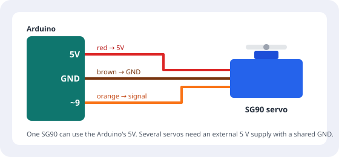
attach(pin)Connects the servo object to a pin.
write(angle)Moves to an angle from 0 to 180.
read()Returns the last angle written.
attached()Returns true if the servo is attached to a pin.
Gauge: map a sensor to the angle—myServo.write(map(analogRead(A0), 0, 1023, 0, 180));
Continuous-rotation servos spin instead:
write(90) stops, values towards 0 or 180 turn faster
in each direction.
On the Uno, the Servo library disables analogWrite()
on pins 9 and 10.
9.3 · Movement: motors
A DC motor can draw hundreds of milliamperes, and much more when it starts or stalls. A pin cannot drive it directly.
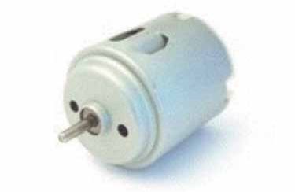
In this module we use the MX1508, a small dual H-bridge that drives two motors (A and B) from a 2–10 V supply, up to about 1.5 A per motor. It has no enable pin: each motor has two inputs, and the PWM value on one of them sets the speed while the other decides the direction.
| IN1 | IN2 | Motor A |
|---|---|---|
| PWM | LOW | Forward, speed = PWM value |
| LOW | PWM | Reverse, speed = PWM value |
| LOW | LOW | Stop (coasts) |
| HIGH | HIGH | Brake |
Motor B works the same way with IN3 and IN4.
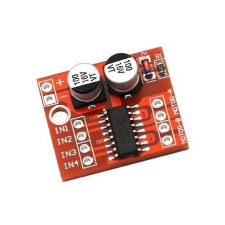
Install the MX1508 library (by Cheng Saetern)
from the Library Manager. It sets IN1 and IN2 for you:
motorGo()
takes a speed from −255 to 255, and the sign sets the direction.
#include <MX1508.h>
MX1508 motorA(5, 6); // IN1, IN2 (both ~PWM pins)
void setup() {}
void loop() {
motorA.motorGo(200); // forward, speed 0–255
delay(2000);
motorA.motorGo(-200); // negative = reverse
delay(2000);
motorA.stopMotor(); // stop
delay(1000);
}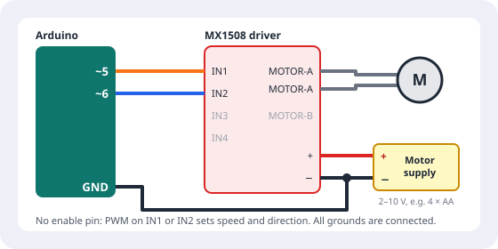
When the motor only needs to turn one way—a fan, a spinning disc—a
single MOSFET (or an NPN transistor) is enough.
The Arduino's PWM pin switches the motor's supply on and off very
fast, so analogWrite() sets the speed. See
Transistors as switches
for how they work.
const int motorPin = 9; // ~PWM → 220 Ω → MOSFET gate
void setup() {
pinMode(motorPin, OUTPUT);
}
void loop() {
for (int speed = 0; speed <= 255; speed += 5) { // speed up
analogWrite(motorPin, speed);
delay(50);
}
delay(1000);
analogWrite(motorPin, 0); // stop
delay(1000);
}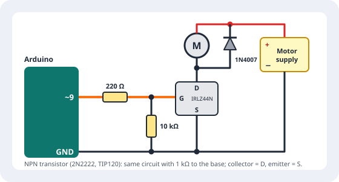
Many motors do not start below a minimum PWM value. Measure it and map your sensor to a range such as 80–255.
9.4 · Movement: motors
Chapter 10 · Screens: LCD · 10.1
Character LCDs show text in a grid: 2 lines of 16 characters or 4 lines of 20. They are readable, cheap, and have a backlight.
With an I2C backpack, only four wires are needed: GND → GND, VCC → 5V, SDA → A4, and SCL → A5.
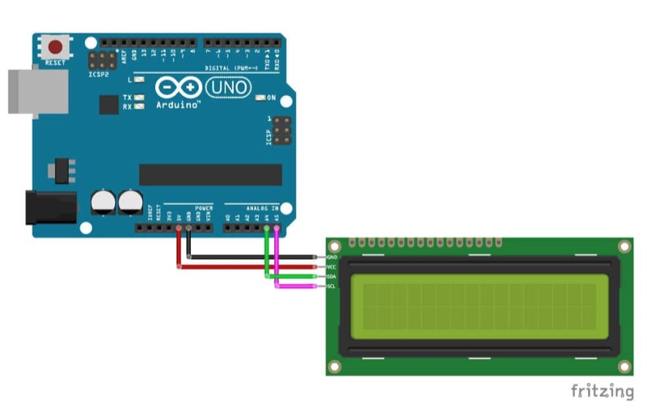
Uses at least 6 Arduino pins plus a contrast potentiometer.
Library: the built-in LiquidCrystal.
A small board soldered to the back reduces the wiring to 4 wires: VCC, GND, SDA, SCL. The blue trimmer adjusts the contrast. Recommended.
I2C is a bus: several devices share the same two wires, SDA (data) and SCL (clock). Each device has an address. On the Uno, SDA is A4 and SCL is A5 (also repeated on the pins next to AREF).
LCD backpacks usually use the address 0x27 or
0x3F. If the screen stays blank, run an
I2C scanner to find the real address:
#include <Wire.h>
void setup() {
Wire.begin();
Serial.begin(9600);
for (byte address = 1; address < 127; address++) {
Wire.beginTransmission(address);
if (Wire.endTransmission() == 0) {
Serial.print("Device found at 0x");
if (address < 16) Serial.print("0");
Serial.println(address, HEX);
}
}
}
void loop() {}10.2 · Screens
#include <Wire.h>
#include <LiquidCrystal_I2C.h>
LiquidCrystal_I2C lcd(0x27, 16, 2); // address, columns, rows
byte heart[8] = {
0b00000, 0b01010, 0b11111, 0b11111,
0b01110, 0b00100, 0b00000, 0b00000
};
void setup() {
lcd.init(); // some library versions use lcd.begin()
lcd.backlight();
lcd.createChar(0, heart);
lcd.setCursor(0, 0); // column 0, row 0
lcd.print("Hello!");
}
void loop() {
lcd.setCursor(0, 1); // second row
lcd.print("Light: ");
lcd.print(analogRead(A0));
lcd.print(" "); // erase leftover digits
lcd.setCursor(15, 1);
lcd.write(byte(0)); // custom character
delay(200);
}lcd.clear() erases everything but is slow and
flickers: for live values, overwrite with spaces instead.
lcd.scrollDisplayLeft() moves the whole display one
character, for messages longer than the screen.
createChar().
Chapter 11 · Sound: sensing and playing · 11.1
A microphone module turns sound into a voltage that Arduino can read: a simple threshold for claps and knocks, or a level for how loud the room is.
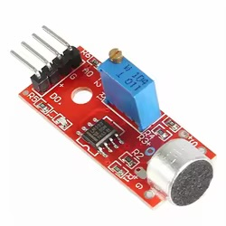
Microphone modules with a digital output (DO) that switches when the sound passes a threshold set with the trimmer, and an analog output (AO). Good for claps and knocks.
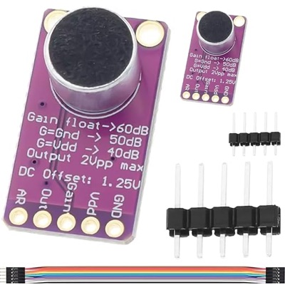
Amplified microphones with a cleaner analog signal, better for measuring loudness. The MAX9814 adjusts its gain automatically.
A microphone's signal goes up and down with the sound wave, so one reading is not enough. Measure the difference between the highest and lowest values in a short window (peak-to-peak):
int readLoudness(int pin) {
unsigned long start = millis();
int highest = 0;
int lowest = 1023;
while (millis() - start < 50) { // listen for 50 ms
int sample = analogRead(pin);
if (sample > highest) highest = sample;
if (sample < lowest) lowest = sample;
}
return highest - lowest; // 0 = silence
}
For simple triggers (a clap), read the module's DO pin with
digitalRead() and turn the trimmer until it only
reacts to the sound you want. To trigger sounds from knocks on
an object, see the piezo knock sensor.
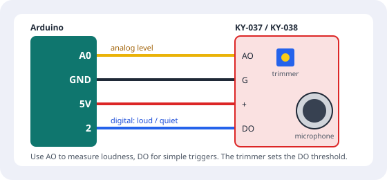
Amplified microphones (MAX9814, MAX4466) give
a single analog audio signal on Out. Read it with
the same readLoudness() function on A0. Powering
them from 3.3 V instead of 5 V gives a cleaner signal.
On the MAX9814, leave Gain unconnected for the
highest gain (60 dB), or connect it to GND (50 dB) or Vdd (40
dB) for loud spaces.
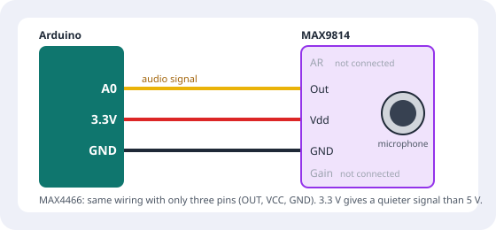
11.2 · Sound
A piezo buzzer turns an electrical signal into sound. It is the simplest way to give audible feedback: a beep to confirm, a low tone for an error, or a short melody.
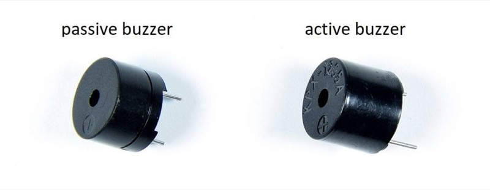
Needs a frequency: use tone(). Can play melodies.
Has its own oscillator: digitalWrite(HIGH) beeps
at one fixed pitch (as in the CarSensor sketch).
const int buzzerPin = 3;
void setup() {
pinMode(buzzerPin, OUTPUT);
}
void loop() {
tone(buzzerPin, 1000); // play a 1000 Hz tone
delay(1000); // for 1 second
noTone(buzzerPin); // stop the tone
delay(1000);
}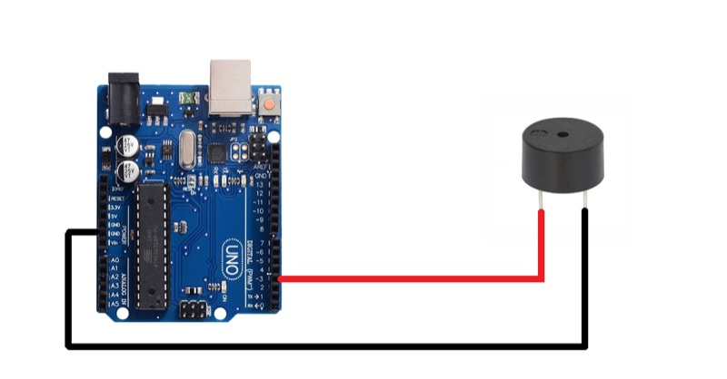
int melody[] = {262, 294, 330, 349, 392}; // C D E F G (Hz)
int durations[] = {200, 200, 200, 200, 400}; // ms
void playMelody() {
for (int i = 0; i < 5; i++) {
tone(buzzerPin, melody[i], durations[i]);
delay(durations[i] * 1.3); // small gap between notes
}
noTone(buzzerPin);
}
On the Uno, tone() interferes with PWM on pins 3 and
11.
11.3 · Sound
The DFPlayer Mini plays MP3 and WAV files from a microSD card and includes a 3 W amplifier: connect a small speaker directly. Arduino tells it which file to play through a serial connection.
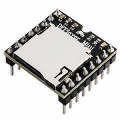
/mp3/0001.mp3,
/mp3/0002.mp3… (use playMp3Folder(n)),
or numbered folders: /01/001.mp3 (use
playFolder(1, 1)).
play(n) plays files in the order they were
copied to the card, not by name. Copy them in order, or
use the folder methods.
DFPlayer VCC → 5V
DFPlayer GND → GND
DFPlayer RX ← 1 kΩ ← Arduino pin 11 (SoftwareSerial TX)
DFPlayer TX → Arduino pin 10 (SoftwareSerial RX)
SPK1 / SPK2 → speaker (up to 3 W), or DAC_L / DAC_R → external amplifier
BUSY → optional: LOW while playing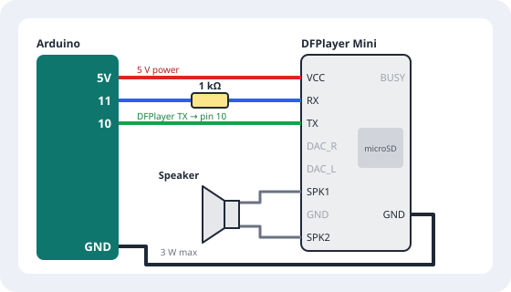
Install DFRobotDFPlayerMini.
SoftwareSerial creates a second serial port, so the
USB Serial Monitor stays free for debugging.
#include <SoftwareSerial.h>
#include <DFRobotDFPlayerMini.h>
SoftwareSerial mp3Serial(10, 11); // RX, TX on the Arduino
DFRobotDFPlayerMini player;
const int buttonPin = 2;
void setup() {
Serial.begin(9600);
mp3Serial.begin(9600);
pinMode(buttonPin, INPUT_PULLUP);
if (!player.begin(mp3Serial)) {
Serial.println("DFPlayer not found: check wiring and SD card");
while (true); // stop here
}
player.volume(20); // 0–30
}
void loop() {
if (digitalRead(buttonPin) == LOW) {
player.playMp3Folder(1); // plays /mp3/0001.mp3
delay(300); // simple debounce
}
}
play(n), playFolder(f, n),
next(), previous()
pause(), start(),
loop(n), volume(0–30)
Read the BUSY pin (LOW = playing) with
digitalRead(); it is faster and more reliable
than asking over serial.
volume() and use a
speaker within the 3 W limit.
Chapter 12 · Powering your project · 12.1
Give each part the voltage it expects: 5 V, 3.3 V, or 12 V.
A supply rated 2 A can deliver up to 2 A. It must be at least as large as your total consumption.
List every part and its current, then add a safety margin of 20–30%.
Run time ≈ battery capacity (mAh) ÷ consumption (mA), multiplied by about 0.7 because batteries never deliver their full rating.
Example budget
Arduino Uno ≈ 50 mA
20 WS2812B LEDs, dimmed ≈ 400 mA
SG90 servo (moving) ≈ 250 mA
------------------------------------
total ≈ 700 mA → 1 A supply minimum
Run time on a 2000 mAh battery ≈ 2000 ÷ 700 × 0.7 ≈ 2 hours12.2 · Powering your project
12.3 · Powering your project
Batteries make an object portable. Choose them by voltage, capacity, size, and how safe they are to handle.
| Type | Voltage | Notes |
|---|---|---|
| AA alkaline / NiMH packs | 4×AA ≈ 6 V (alkaline) or 4.8 V (NiMH); 6×AA ≈ 9 V | Easy and safe. 6×AA into VIN works well for the Uno. |
| 9 V battery | 9 V | Low capacity; drains in hours. Avoid. |
| LiPo / Li-ion (18650) | 3.7 V per cell | Light and powerful. Needs care and a proper charger. |
| USB power bank | 5 V | Simple, but many switch off automatically when the current is low. |
| Coin cell (CR2032) | 3 V | Only for tiny loads: one LED, a small sensor. |
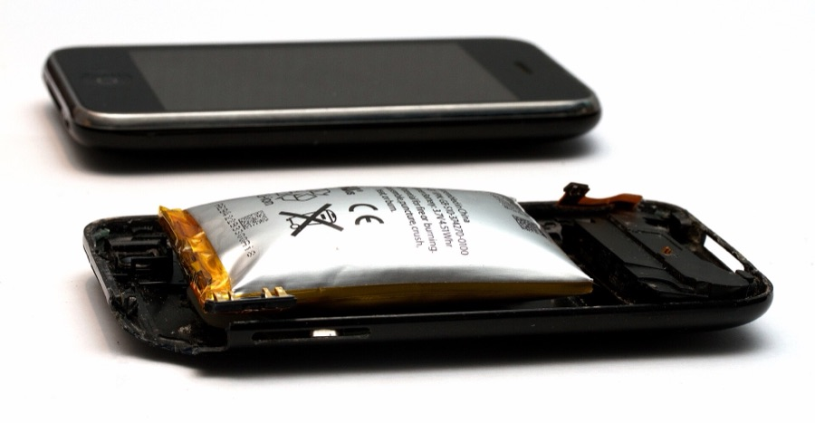
12.4 · Powering your project
For LED strips and servos. Choose 2 A, 4 A, or 10 A depending on your budget.
For 12 V motors and 12 V LED strips.
The 7805 (5 V) and AMS1117 (3.3 V) are simple and quiet, but
turn the extra voltage into heat:
heat = (Vin − Vout) × current. Fine for small
loads.
Buck (step-down: LM2596, MP1584) and boost (step-up: MT3608) converters are efficient and stay cool. Set the output with the trimmer and measure it before connecting your circuit.
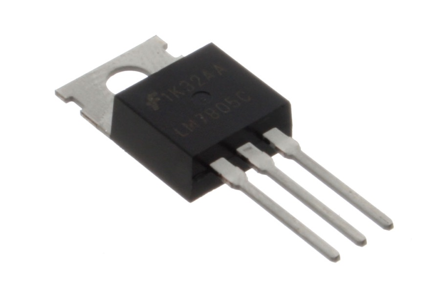
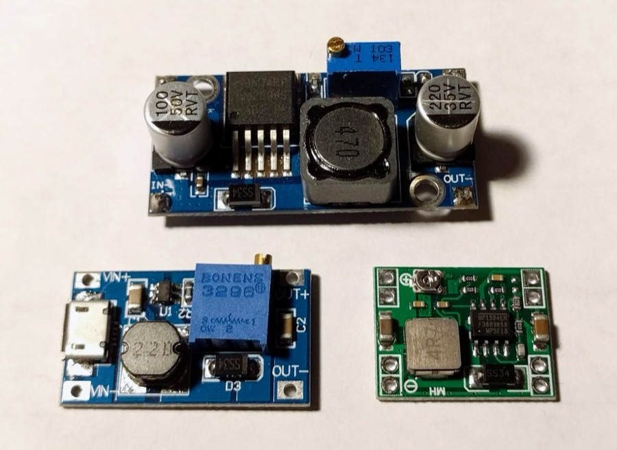
12.5 · Powering your project
12.6 · Powering your project
LowPower library
on the Uno and ArduinoLowPower on the MKR put the
board to sleep between events.
12.7 · Powering your project
MKR WiFi 1010 + LiPo battery on its JST connector.
Uno + 5 V high-current supply feeding the strip, with shared GND and power injection.
Arduino + motor driver + separate motor supply, with shared GND.
Appendix A
| What | Arduino Uno |
|---|---|
| Digital pins | 2–13 (avoid 0 and 1: USB serial) |
| PWM (~) | 3, 5, 6, 9, 10, 11 |
| Analog inputs | A0–A5 (0–1023) |
| I2C | SDA A4, SCL A5 |
| SPI | SS 10, MOSI 11, MISO 12, SCK 13 |
| Wire colours | Black/white GND · red power · other colours signals |
| LED | Pin → 220 Ω → anode (long leg); cathode → GND |
| Button | Pin ↔ button ↔ GND with INPUT_PULLUP |
| Potentiometer | Outer legs 5V and GND; middle → A0 |
| Servo SG90 | Brown GND · red 5V · orange signal |
| Motor driver (MX1508) | IN1, IN2 → two ~PWM pins; + / − → 2–10 V motor supply; shared GND |
| Motor with a MOSFET | Pin → 220 Ω → gate (10 kΩ gate to GND); motor + diode between supply + and drain; source → GND |
| LED strip | 5V and GND from supply (shared GND); DIN ← 330 Ω ← pin; 1000 µF across power |
| DFPlayer Mini | RX ← 1 kΩ ← pin 11; TX → pin 10; SPK1/SPK2 → speaker |
| RC522 RFID (SPI) | 3.3V only · SDA 10 · SCK 13 · MOSI 11 · MISO 12 · RST 9 |
| HC-SR04 | VCC 5V · TRIG and ECHO → digital pins · GND |
| I2C LCD | VCC · GND · SDA A4 · SCL A5 |
Appendix B
| Function | What it does |
|---|---|
pinMode(pin, mode) |
OUTPUT, INPUT, or INPUT_PULLUP |
digitalWrite(pin, v) /
digitalRead(pin)
|
Write / read HIGH or LOW |
analogRead(pin) |
0–1023 from A0–A5 |
analogWrite(pin, v) |
PWM 0–255 on ~ pins |
map(v, a, b, c, d) /
constrain(v, min, max)
|
Rescale / clamp a value |
delay(ms) / delayMicroseconds(us)
|
Pause (blocks the program) |
millis() |
Milliseconds since start (use unsigned long)
|
pulseIn(pin, HIGH) |
Length of a pulse in µs |
tone(pin, Hz, ms) / noTone(pin)
|
Play / stop a frequency |
random(min, max) |
Random number from min to max − 1 |
Serial.begin(), print(),
println(), available(),
read()
|
Serial communication |
| Library | Key methods |
|---|---|
| Servo |
attach, write, read,
attached
|
| FastLED |
addLeds, setBrightness,
show, clear,
fill_solid, fill_rainbow,
CHSV, ColorFromPalette,
fadeToBlackBy, beatsin8
|
| LiquidCrystal_I2C |
init, backlight,
setCursor, print,
clear, createChar
|
| MFRC522 |
PCD_Init, PICC_IsNewCardPresent,
PICC_ReadCardSerial, uid,
PICC_HaltA
|
| DFRobotDFPlayerMini |
begin, volume, play,
playFolder, playMp3Folder,
next, pause, loop
|
| MX1508 |
motorGo (−255 to 255), stopMotor
|
| NewPing |
ping_cm, ping_median,
convert_cm
|
| DHT |
readTemperature, readHumidity
|
Appendix C
| Chapter | Components |
|---|---|
| Electronics guide, ch. 1–3 | Breadboard, jumper wires, resistors (220 Ω, 1 kΩ, 10 kΩ, 100 kΩ), LEDs, multimeter |
| Electronics guide, ch. 4 | Soldering station, solder, flux, brass sponge, helping hands, heat-shrink, perfboard, headers |
| 1–2 Arduino, digital I/O | Arduino Uno (or MKR WiFi 1010), USB cable, LEDs, 220 Ω, push buttons, 10 kΩ |
| 3 Analog and PWM | Potentiometer or fader, LED on a ~ pin |
| 4 Interaction logic | 5 LEDs, 2–4 buttons |
| 6 Sensors | LDR + 100 kΩ, Sharp IR, HC-SR04, DHT11/22, FSR + 10 kΩ, piezo + 1 MΩ, KY-031 / SW-420 |
| 7 RFID | RC522 reader, MIFARE cards, fobs, and stickers |
| 8 LED strips | WS2812B strip, 330 Ω, 1000 µF capacitor, 5 V supply |
| 9 Motors | SG90 servo, DC motor, MX1508 driver (or a transistor + 1N4007) |
| 10 Screens | 16×2 or 20×4 I2C LCD |
| 11 Sound | KY-038/037 or MAX4466/9814, piezo buzzer, DFPlayer Mini + microSD + speaker, 1 kΩ |
| 12 Power | Battery packs, LiPo, 5 V and 12 V supplies, buck/boost converters, switch, fuse |
Appendix D
| Symptom | Check |
|---|---|
| LED does not light |
Polarity (long leg to +), resistor present, correct pin,
pinMode(OUTPUT)
|
| Button reads random values |
Floating input: add a pull-down or use
INPUT_PULLUP
|
| One press counts many times | Detect the edge and debounce (4.4) |
| Strip, motor, or module behaves randomly | Shared ground between all supplies |
| Board resets when a motor or strip turns on | USB power limit: use an external supply and capacitors |
| Screen blank | I2C address (run the scanner), SDA/SCL swapped, contrast trimmer |
| Analog value stuck at 0 or 1023 | Divider missing, wire on the wrong pin, sensor not powered |
| Works on the bench, fails in the object | Bad solder joints (continuity test), cables pulled loose, sensor calibration in the new space |
| Upload error | Board and port selected, port not used by another program, data USB cable |
| Library error | See 5.1 |
Appendix E
| Term | Meaning |
|---|---|
| Actuator | A component that acts on the world: LED, motor, buzzer |
| Analog | A signal that can take any value in a range |
| Baud rate | Speed of serial communication (e.g. 9600) |
| Breadboard | Board for building circuits without soldering |
| Debounce | Ignoring the fast, false edges of a mechanical button |
| Digital | A signal with two states: HIGH or LOW |
| Edge | The moment a signal changes from one state to another |
| GND | Ground, the 0 V reference of a circuit |
| H-bridge | Driver that can reverse a DC motor |
| Hysteresis | Using two thresholds so a state does not flicker |
| I2C / SPI | Buses to connect modules with few wires |
| Library | Reusable code for a component or task |
| Microcontroller | A small computer on a chip that runs one program |
| PWM | Fast on/off switching that imitates an analog level |
| Pull-up / pull-down | Resistor that gives an input a defined default state |
| Sensor | A component that measures something in the world |
| Sketch | An Arduino program |
| State machine | Logic organised as states and the events that change them |
| UID | Unique identifier of an RFID tag |
| Voltage divider | Two resistors that split a voltage; used to read resistive sensors |